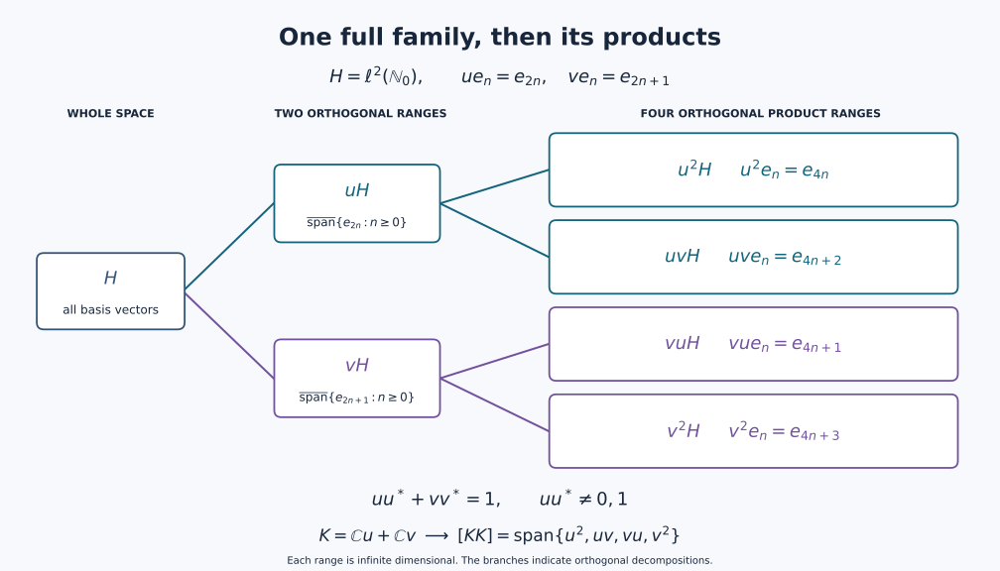

Internal Hilbert spaces in a von Neumann algebra
Self-checked by the writing AI.
A scalar inner product can be encoded by multiplication inside an operator algebra. Its orthonormal vectors then become isometries, and their ranges record how much of the algebra the space occupies. We first identify that support projection and recover vectors from their scalar coefficients. This gives the topology of these spaces and the constructions by multiplication and orthogonal placement. The final examples show why fullness matters and why taking adjoints changes the situation.
Throughout, $M\subseteq B(H)$ is a nonzero unital von Neumann algebra on an arbitrary Hilbert space, and inner products are linear in the first variable. No separability or countability hypothesis is imposed. All sums indexed by an arbitrary set mean nets over its finite subsets.
We use the maximality principle and Hilbert projection and completion proofs in Continuous calculus, positivity and Hilbert spaces, Sections 1, 8 and 10, and the arbitrary orthogonal projection sums proved in Projection comparison and the countably decomposable type III case, PC-1. The Hilbert tensor construction is proved in Compact topology and the Hilbert tensor construction, H0.
Internal Hilbert spaces are full scalar Hilbert subspaces
An internal Hilbert space in $M$ is a linear subspace $K\subseteq M$ with the following properties:
-
for $x,y\in K$ there is a scalar $\langle x,y\rangle$ such that
$$ y^*x=\langle x,y\rangle 1; \tag{U1} $$
-
$K$ is complete for the norm defined by this inner product;
-
$K$ is left full:
$$ aK=\{0\},\quad a\in M \quad\Longrightarrow\quad a=0. \tag{U2} $$
The scalar in (U1) is unique since $1\ne0$. Linearity of multiplication and the adjoint rules give sesquilinearity and conjugate symmetry. If $x^*x=c1$, then for a unit vector $\xi\in H$ we have $c=\langle x^*x\xi,\xi\rangle=\|x\xi\|^2\ge0$. The C*-identity makes $c=0$ equivalent to $x=0$. Thus the scalar form really is an inner product, without any additional positivity assumption.
The Hilbert norm is already the ambient operator norm, because
$$ \|x\|_M^2=\|x^*x\| =\|\langle x,x\rangle1\| =\|x\|_K^2. \tag{U3} $$
Thus the inclusion $K\hookrightarrow M$ is isometric, and completeness makes $K$ norm closed. Condition (U2) is stronger than nondegeneracy of the inner product: it records that the left support of the entire embedded space is the unit of $M$.
Conversely, a norm-closed linear subspace satisfying (U1) is complete for this Hilbert norm. We call it a scalar Hilbert subspace when fullness has not been assumed. The zero space is allowed under this latter name; it is not internal in a nonzero algebra. Every unit vector $u$ in a scalar Hilbert subspace satisfies $u^*u=1$ and is an isometry.
Bases determine the support and the whole space
Basis and support theorem. Let $K\subseteq M$ be a norm-closed scalar Hilbert subspace. It has an orthonormal basis $(u_i)_{i\in I}$, possibly with $I$ empty. For any such basis the projections $u_i u_i^*$ are orthogonal and their strong sum is the same projection $p_K\in M$. It is characterized as the least projection $p$ satisfying $px=x$ for every $x\in K$. Moreover
$$ aK=0\quad\Longleftrightarrow\quad ap_K=0 \qquad(a\in M). \tag{U-Support} $$
In particular, $K$ is internal exactly when $p_K=1$. Conversely, the norm-closed span of any family $(u_i)\subset M$ with $u_j^*u_i=\delta_{ij}1$ is a scalar Hilbert subspace, and it is internal exactly when the strong sum of the range projections is $1$.
Hilbert coordinates. Here are the Hilbert-space details for arbitrary index sets. Order the orthonormal subsets of $K$ by inclusion. The union of a chain is orthonormal, so the maximality principle supplies a maximal family. If its closed linear span were proper, the Hilbert projection theorem would give a nonzero vector perpendicular to that span; normalizing it would enlarge the family. Thus the family is a basis.
For $x\in K$, put $c_i=\langle x,u_i\rangle$ and $x_F=\sum_{i\in F}c_i u_i$. Expansion gives
$$ \|x-x_F\|^2=\|x\|^2-\sum_{i\in F}|c_i|^2\ge0. \tag{U-Bessel} $$
The supremum of the finite sums is finite. Given $\varepsilon>0$, choose one finite sum within $\varepsilon^2$ of that supremum. Every disjoint finite tail then has squared norm at most $\varepsilon^2$, so $(x_F)$ is norm Cauchy. For completeness, such a Cauchy net in a complete metric space converges: choose increasing indices with tail diameters at most $2^{-n}$, take their sequential limit, and use those same tail bounds for the entire net. Its limit $k$ lies in $K$. The difference $x-k$ is perpendicular to every $u_i$, hence to their dense span, and is zero. It follows also that $\|x\|^2=\sum_i|c_i|^2$.
Conversely, for any scalar family $c=(c_i)$ with $\sum_i|c_i|^2<\infty$, the same finite-tail estimate constructs $\sum_i c_i u_i$ in norm, with squared norm $\sum_i|c_i|^2$. Each set $\{i:|c_i|\ge1/n\}$ is finite, so the nonzero coordinates form a countable union of finite sets, even if $I$ is uncountable. These arguments give the unitary coefficient map $\ell^2(I)\to K$ and specify its convergence without choosing an enumeration of $I$.
Proof of the support assertions. Equation (U1) gives
$$ u_j^*u_i=\delta_{ij}1. \tag{U13} $$
Thus each $u_i$ is an isometry. The projections $p_i=u_i u_i^*$ are pairwise orthogonal since $p_i p_j=u_i(u_i^*u_j)u_j^*=0$ for $i\ne j$. For a finite set $F\Subset I$ put
$$ p_F=\sum_{i\in F}u_i u_i^*. \tag{U14} $$
By PC-1, these projections converge strongly to their join $p\in M$. This is also immediate on each vector: the orthogonal vectors $p_i\xi$ have bounded finite sums of squared norms, so the same tail argument constructs their sum, the orthogonal projection onto the closed span of their ranges. For each $j$, we have $pu_j=u_j$. Norm density of finite basis sums gives $px=x$ for every $x\in K$.
If a projection $q$ satisfies $qx=x$ for all $x\in K$, then $qu_i=u_i$, so $q p_i=p_i$ for every $i$. Taking the strong sum gives $qp=p$ and $p\le q$. This least-projection characterization proves independence of the basis; write $p=p_K$. If $aK=0$, then $au_i=0$, so $ap_F=0$; the strong limit gives $ap_K=0$. The converse follows from $p_Kx=x$. In particular, fullness is equivalent to $p_K=1$, because $1-p_K$ annihilates $K$. For an internal space this proves
$$ \boxed{\sum_{i\in I}u_i u_i^*=1 \quad\text{strongly over finite subsets of }I.} \tag{U15} $$
Finally, start with any orthogonal isometry family. On finite linear combinations, multiplication gives
$$ \left(\sum_i d_i u_i\right)^*\left(\sum_i c_i u_i\right) =\left(\sum_i c_i\overline{d_i}\right)1. \tag{U-Coordinates} $$
Its operator norm is therefore the $\ell^2$ norm of its coefficients. Multiplication and adjoints are norm continuous, so this scalar identity passes to the norm-closed span. That span is a scalar Hilbert subspace by (U3), the family is its orthonormal basis, and the support result already proved supplies the fullness criterion. $\square$
Recovering a weak limit from its coefficients
Closedness theorem. Every norm-closed scalar Hilbert subspace of $M$, including a nonfull one, is weak-operator closed and is closed in all the stronger usual operator topologies.
Proof. Use the basis and support $p_K$ just constructed. Suppose $x_\lambda\in K$ and $x_\lambda\to x\in M$ in the weak operator topology. For every $i$,
$$ u_i^*x_\lambda\in\mathbb C1. \tag{U16} $$
For fixed $b\in M$, the map $z\mapsto bz$ is weak-operator continuous, since $\langle bz\xi,\eta\rangle=\langle z\xi,b^*\eta\rangle$. The scalar line $\mathbb C1$ is weak-operator closed: if $c_\lambda1\to b$ weakly, a fixed unit vector $\xi_0$ gives $c_\lambda\to c=\langle b\xi_0,\xi_0\rangle$; testing any pair $\xi,\eta$ then gives $\langle b\xi,\eta\rangle=c\langle\xi,\eta\rangle$, so $b=c1$. Consequently
$$ u_i^*x=\lambda_i1 \quad(i\in I) \tag{U17} $$
for scalars $\lambda_i$. For each finite $F\Subset I$,
$$ \left(\sum_{i\in F}|\lambda_i|^2\right)1 =x^*p_Fx \le x^*x. \tag{U18} $$
Evaluating this positive-operator inequality at any unit vector gives $\sum_{i\in F}|\lambda_i|^2\le\|x\|^2$. Taking the supremum over finite $F$ proves $(\lambda_i)_{i\in I}\in\ell^2(I)$. The Hilbert-space series
$$ k=\sum_{i\in I}\lambda_i u_i \tag{U19} $$
converges in $K$, hence in the operator norm of $M$. Equations (U17) and (U19) give $u_i^*(x-k)=0$ for every $i$, and therefore $p_F(x-k)=0$ for every finite $F$. Since $p_Kx_\lambda=x_\lambda$, weak continuity also gives $p_Kx=x$; and $p_Kk=k$ by definition of the support. Passing strongly to $p_F\to p_K$ now yields $x-k=p_K(x-k)=0$. This includes the full case $p_K=1$ of (U15), and the zero space when the basis is empty. Thus $x\in K$.
We have shown that $K$ is weak-operator closed. It follows that it is closed for every stronger usual operator topology: strong, strong-star, ultraweak, ultrastrong, and ultrastrong-star. Indeed, strong convergence implies weak operator convergence by scalar Cauchy–Schwarz; strong-star convergence includes strong convergence. The ultraweak seminorms include each single vector functional, and the ultrastrong seminorms include each single-vector norm; adjoining the adjoint seminorms only strengthens a topology. Equation (U3) and completeness give norm closedness as well.
$\square$
Multiplication realizes the Hilbert tensor product internally
Tensor theorem. If $K,L\subseteq M$ are internal, multiplication induces a unitary Hilbert-space map $K\otimes_2 L\to[KL]$, and $[KL]$ is internal.
Proof. The Hilbert tensor product for arbitrary Hilbert spaces was constructed in H0: its inner product on elementary tensors is the product of the two inner products, extended sesquilinearly and completed. Multiplication in $M$ is bilinear, so its linear map on the algebraic tensor product is well defined by the defining bilinear relations. Define
$$ S:K\odot L\longrightarrow M, \qquad S(x\otimes y)=xy. \tag{U26} $$
For elementary tensors,
$$ \begin{aligned} S(x'\otimes y')^*S(x\otimes y) &=y'^*x'^*xy \\ &=\langle x,x'\rangle\,y'^*y \\ &=\langle x,x'\rangle\langle y,y'\rangle1. \end{aligned} \tag{U27} $$
Expanding two finite sums of elementary tensors in (U27) gives $S(\eta)^*S(\zeta)=\langle\zeta,\eta\rangle1$. In particular the C*-identity gives $\|S(\zeta)\|=\|\zeta\|$, so $S$ is injective and isometric. The extension theorem in Hilbert completion applies because $M$ is complete. It extends to a unitary from $K\otimes_2L$ onto
$$ [KL]=\overline{\operatorname{span}}^{\|\cdot\|} \{xy:x\in K,\ y\in L\}. \tag{U28} $$
The extended range is complete and norm closed because the extension is an isometry from a complete space. Its scalar inner-product identity passes to arbitrary pairs by norm continuity of multiplication and the adjoint. Hence $[KL]$ is a scalar Hilbert subspace.
It remains to check fullness. If $a[KL]=0$, then for every $x\in K$,
$$ (ax)y=0 \quad\text{for all }y\in L. \tag{U29} $$
Fullness of $L$ gives $ax=0$. Since this holds for all $x\in K$, fullness of $K$ gives $a=0$. Thus $[KL]$ is an internal Hilbert space naturally isometric to $K\otimes_2L$.
$\square$
There is also a useful basis formula. If $(u_i)_{i\in I}$ and $(w_j)_{j\in J}$ are orthonormal bases of $K$ and $L$, then $(u_iw_j)_{(i,j)\in I\times J}$ is an orthonormal basis of $[KL]$: the elementary tensor basis is orthonormal by its inner product, and its finite span is dense by approximation in each factor and $\|x\otimes y\|=\|x\|\|y\|$. Its images are therefore a basis under $S$. Equivalently, the multiplication identity reads
$$ (u_{i'}w_{j'})^*(u_iw_j)=\delta_{ii'}\delta_{jj'}1, \qquad \sum_{i,j}u_iw_jw_j^*u_i^*=1\quad\text{strongly}. \tag{U-ProductBasis} $$
The strong equality follows from the basis and support theorem applied to the full space $[KL]$. It does not require interchanging two uncountable iterated limits.
Full isometry families realize internal direct sums
Direct-sum theorem. Let $K,L\subseteq M$ be internal Hilbert spaces, and let $v,w\in M$ be isometries satisfying
$$ vv^*+ww^*=1. \tag{U20} $$
Their ranges are orthogonal, so $v^*w=0$. Define
$$ T:K\oplus L\longrightarrow M, \qquad T(x,y)=vx+wy. \tag{U21} $$
For $x,x'\in K$ and $y,y'\in L$,
$$ T(x',y')^*T(x,y) =\bigl(\langle x,x'\rangle+ \langle y,y'\rangle\bigr)1. \tag{U22} $$
Hence $T$ is an isometry and its range $vK+wL$ is complete. If $a(vK+wL)=0$, then $(av)K=0$ and $(aw)L=0$. Fullness of $K$ and $L$ gives $av=aw=0$, whence
$$ a=a(vv^*+ww^*)=0. \tag{U23} $$
Thus $vK+wL$ is internal and naturally isometric to $K\oplus L$.
The arbitrary-family version has an explicit size hypothesis. Let $(K_i)_{i\in I}$ be internal spaces and suppose $M$ contains isometries $(v_i)_{i\in I}$ with
$$ v_i^*v_j=\delta_{ij}1, \qquad \sum_{i\in I}v_i v_i^*=1 \quad\text{strongly}. \tag{U24} $$
On finitely supported vectors define
$$ T((x_i))=\sum_i v_i x_i. \tag{U25} $$
Here $\bigoplus_iK_i$ is the Hilbert completion of the finitely supported families, with squared norm $\sum_i\|x_i\|^2$; existence and unique extension are proved in Hilbert completion. For any two finite families, direct multiplication gives
$$ T((y_i))^*T((x_i)) =\sum_i y_i^*x_i =\left(\sum_i\langle x_i,y_i\rangle\right)1. \tag{U-SumNorm} $$
Thus $T$ extends to a linear isometry into the complete algebra $M$. Its range is complete and therefore norm closed; the displayed scalar product identity passes to the completion by norm continuity. The extension is concretely the norm limit of the finite sums in (U25). Indeed any family with $\sum_i\|x_i\|^2<\infty$ has Cauchy finite tails in this norm, and conversely every element of the completion has such coordinates by continuity of each coordinate and approximation by finite families. To verify the latter assertion explicitly, for a norm-Cauchy sequence of finite families the individual coordinates converge in $K_i$. Bounds on every finite sum pass to the limit, and the Cauchy bound then shows that these limiting coordinates are approached in the sum norm. This also proves completeness of that concrete family description. The resulting range is an internal copy of $\bigoplus_iK_i$ once fullness is checked. If an element $a\in M$ annihilates this range, fullness of each $K_i$ gives $av_i=0$; (U24) then gives $a=0$.
This proves the arbitrary-family assertion, including finite and countable families. In the nonzero algebra the hypothesis (U24) excludes an empty index set. $\square$
Condition (U24) is part of the construction. It need not hold for an arbitrary index set in an arbitrary von Neumann algebra. For example, a finite algebra cannot contain two isometries with orthogonal ranges and initial projection $1$: finiteness of its unit says that an isometry with initial projection $1$ also has final projection $1$, whereas two such final projections cannot be orthogonal in a nonzero algebra. Internal direct sums therefore reflect the projection size available in $M$.
Taking adjoints need not preserve the internal Hilbert property
The following concrete example makes the asymmetry visible. On $\ell^2(\mathbb N_0)$, define operators on its standard orthonormal basis by
$$ u e_n=e_{2n},\qquad v e_n=e_{2n+1}\qquad(n\ge0). \tag{U-Binary} $$
They preserve the norms of finite basis sums, so each extends isometrically to the whole Hilbert space. Their ranges are the closed spans of the even and the odd basis vectors. These orthogonal subspaces sum to the whole space, proving $u^*u=v^*v=1$ and $uu^*+vv^*=1$ in $B(\ell^2(\mathbb N_0))$.
More generally, suppose $M$ contains isometries $u,v$ with
$$ u^*u=v^*v=1, \qquad uu^*+vv^*=1. \tag{U4} $$
The projections $uu^*$ and $vv^*$ are complements by (U4), so they are orthogonal. Hence $u^*v=u^*(uu^*)(vv^*)v=0$, and $v^*u=0$ by taking adjoints. Then $K=\mathbb Cu+\mathbb Cv$ is internal. Indeed, for $x=\lambda u+\mu v$ and $y=\lambda' u+\mu'v$,
$$ y^*x =\bigl(\overline{\lambda'}\lambda+ \overline{\mu'}\mu\bigr)1, \tag{U5} $$
The resulting norm is the Euclidean norm on two coordinates, so the space is complete; and $aK=0$ gives $au=av=0$, hence $a=a(uu^*+vv^*)=0$.
The adjoint space $K^*=\mathbb Cu^*+\mathbb Cv^*$ fails the scalar-product condition. Taking $x=y=u^*$ in the proposed analogue of (U1) gives
$$ y^*x=uu^*. \tag{U6} $$
The projection $uu^*$ is neither $0$ nor $1$ because its orthogonal complement is $vv^*\ne0$. Therefore it is not scalar. Internal Hilbert spaces are consequently asymmetric under the adjoint operation.

The diagram shows the exact orthogonal ranges in the example (U-Binary), not a finite-dimensional approximation. Each row at the right denotes the closed span of all the displayed residue-class vectors. Products act from right to left: $uv e_n=e_{4n+2}$, whereas $vu e_n=e_{4n+1}$. Thus $(u^2,uv,vu,v^2)$ is the orthonormal basis of $[KK]$ supplied by (U-ProductBasis). The nontrivial projection $uu^*$ onto the even subspace is precisely the obstruction in (U6). Reproducible diagram source.
One-dimensional internal spaces are unitary lines
Unitary-line theorem. Let $K=\mathbb Cx$ be one dimensional and internal. Normalize $x$ in its Hilbert norm and write $u=x/\|x\|_K$. Equation (U1) gives
$$ u^*u=1, \tag{U7} $$
so $u$ is an isometry. The projection $1-uu^*$ annihilates $u$:
$$ (1-uu^*)u=0. \tag{U8} $$
It therefore annihilates all of $K$, and fullness forces $uu^*=1$. Hence $u$ is unitary and $K=\mathbb Cu$.
Conversely, if $u\in\mathcal U(M)$, then $\mathbb Cu$ satisfies (U1), is complete, and is full: $au=0$ implies $a=0$. Thus
$$ \boxed{\dim K=1 \quad\Longleftrightarrow\quad K=\mathbb Cu\text{ for some }u\in\mathcal U(M).} \tag{U9} $$
Two-dimensional internal spaces are full orthogonal isometry pairs
Two-dimensional classification. Let $K$ be a two-dimensional internal Hilbert space and choose an orthonormal basis $u,v$. From (U1),
$$ u^*u=v^*v=1, \qquad u^*v=v^*u=0. \tag{U10} $$
Thus $u$ and $v$ are isometries, and their range projections are orthogonal:
$$ (uu^*)(vv^*)=u(u^*v)v^*=0. \tag{U11} $$
Put $p=uu^*+vv^*$. Since $(1-p)u=(1-p)v=0$, the projection $1-p$ annihilates $K$. Fullness gives $p=1$. We have proved
$$ u^*u=v^*v=1, \qquad uu^*+vv^*=1. \tag{U12} $$
The converse is the computation in (U5): any pair satisfying (U12) spans a two-dimensional internal Hilbert space. In particular, the existence of a two-dimensional internal Hilbert space already forces the unit of $M$ to split into two equivalent orthogonal subprojections.
Problem: closed range of the coefficient map
Problem. Let $(u_i)_{i\in I}$ be an orthonormal basis of an internal Hilbert space in $M$. Show directly that $\ell^2(I)\to M$, $(\lambda_i)\mapsto\sum_i\lambda_i u_i$, has weak-operator closed range.
Solution. The finite-tail norm calculation in the basis theorem defines this map on all of $\ell^2(I)$ and makes it an isometry. If a net in its range converges weakly to $x$, left multiplication by $u_i^*$ extracts a scalar coefficient $\lambda_i$, because the scalar line is weak-operator closed. Inequality (U18) makes the coefficient family square summable, with $\sum_i|\lambda_i|^2\le\|x\|^2$. Its norm sum $k$ lies in the range, and (U15) turns $u_i^*(x-k)=0$ for every $i$ into $x-k=\lim_F p_F(x-k)=0$. $\square$
Mathematical source and terms
The internal Hilbert-space construction and the questions about adjoints, topology, sums and products are due to Masamichi Takesaki, Theory of Operator Algebras II, Exercise XI.2.1. The exposition here develops those questions through the support projection and arbitrary-index coefficient reconstruction, with complete proofs and an explicit even–odd model. The Hilbert and projection results used in those proofs are linked at their points of use above.
Original lesson exposition and the original diagram and its code are dedicated to the public domain under CC0-1.0 to the extent of any rights held in them. Cited works retain their own terms. The diagram uses DejaVu Sans; its accompanying font license is retained with the assets.